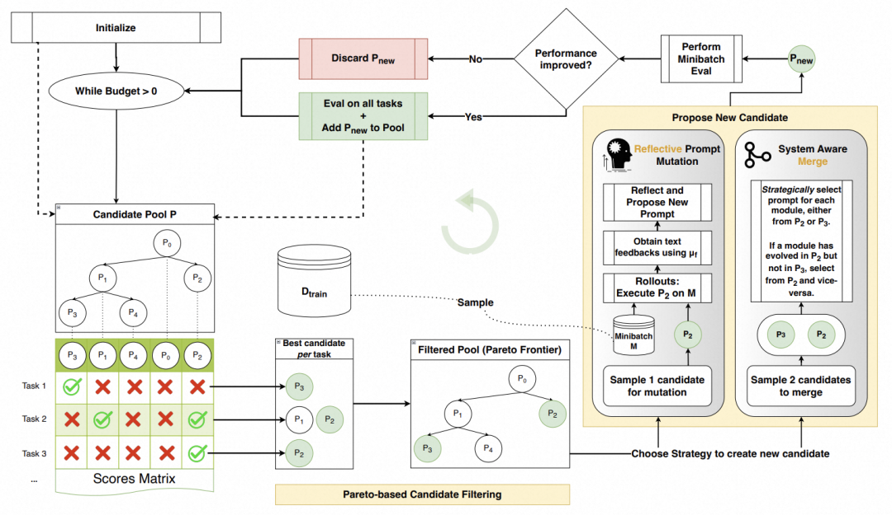
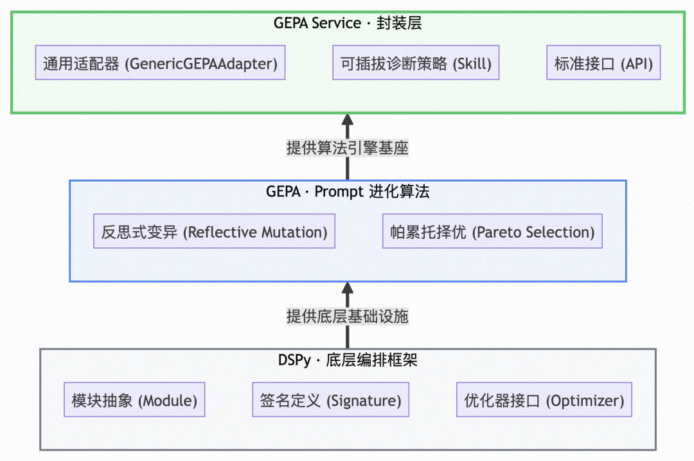
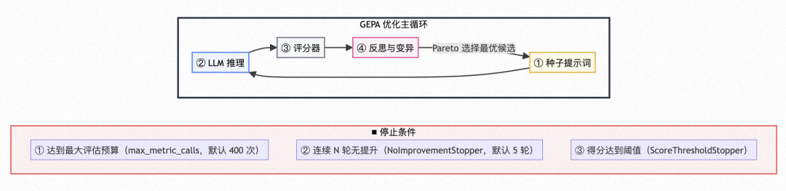
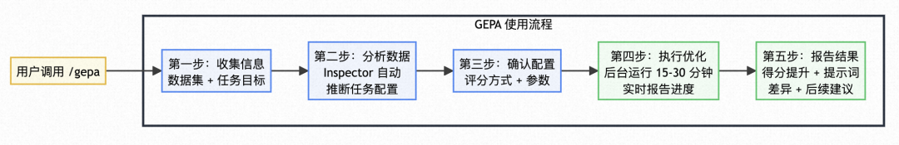
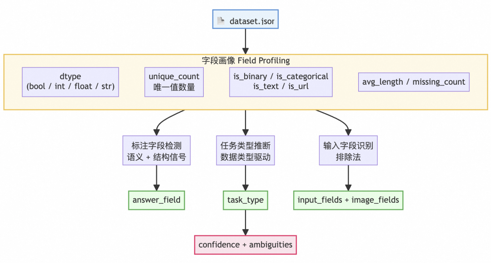
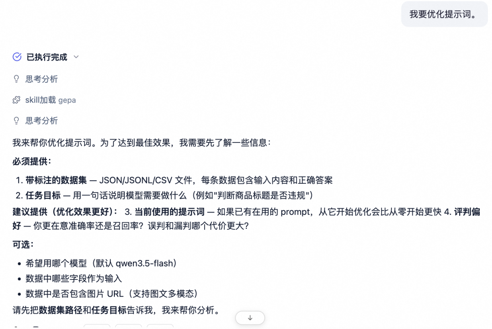
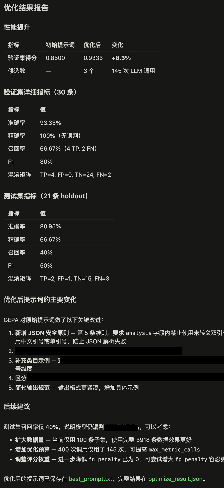
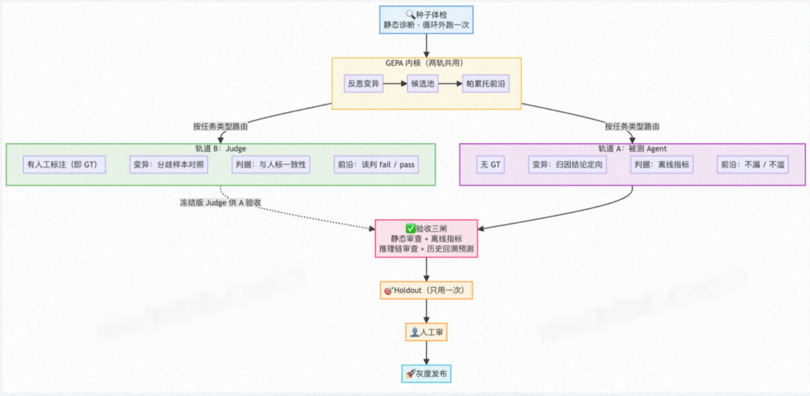

GEPA：提示词自进化的优化方案（反思式变异+帕累托择优）
来源：微信公众号 归档日期：2026-09-16 抓取状态：成功 原文字符：19321｜配图：10 张
摘要速览
- GEPA = Genetic-Pareto, Reflective Prompt Evolution，ICLR 2026 论文，隶属斯坦福 DSPy 生态；大淘宝技术基于其设计了 Prompt 自进化系统。
- 人工调 Prompt 的四个痛点：盲目性高、伪自动化（静态扫描缺反思闭环）、难以复制、无权衡机制。
- 两大对齐难题因此无解：LLM Judge 与人工标注对齐、与线上业务效果对齐。
- 方案是构建"推理 → 评分 → 反思 → 选择"的自动闭环：LLM 自动分析 Badcase、归因到 Prompt 的具体规则、生成候选变体。
- 基于帕累托前沿多目标择优，避免单点修补引发的指标对抗性退化（改好一个指标、弄坏另一个）。
- 工程上采用任务无关架构：支持二分类、多分类、评分等场景，零配置设计自动分析数据集并推断配置，把"每个场景写代码"变成"填配置就能用"，并提供可解释的优化过程。
核心内容
1. 问题：人工经验驱动优化为什么不够
四个痛点：
- 盲目性高：凭直觉改提示词，说不清改动的依据。
- 伪自动化：静态扫描 + 自动改写看着像自动优化，但没有反思闭环——不知道错在哪里，只是机械替换措辞。
- 难以复制：在一个场景调好的提示词，换场景要重新来一遍。
- 无权衡机制：多个指标之间没有取舍框架，改一个坏一个。
由此导致两个对齐难题始终无解：LLM Judge 的判断与人工标注对不齐；与线上业务效果也对不齐。
2. 方案：GEPA 的思路
核心是把提示词优化从"人工试错"改成"自动闭环"，闭环由四步组成：
- 推理：用当前 Prompt 跑任务。
- 评分：对结果打分，定位 Badcase。
- 反思：LLM 自动分析 Badcase，归因到 Prompt 的具体规则（而不是笼统地说"效果不好"），据此生成候选变体。这一步对应 GEPA 名称里的 Reflective（反思式变异）。
- 选择：在多个候选之间择优。
3. 关键设计：帕累托前沿多目标择优
对应名称里的 Pareto。多个评价指标往往互相冲突，单点修补很容易出现对抗性退化——某个指标涨了，另一个悄悄跌了。用帕累托前沿做多目标择优，保留的是"在多个目标上都不劣"的解集，避免为了一城一地牺牲整体。
4. 工程实现
- 任务无关架构：同一套流程支持二分类、多分类、评分等多种任务场景。
- 零配置设计：自动分析数据集并推断配置，把"每个场景写代码"变成"填配置就能用"。
- 可解释优化过程：能看到每一轮改了什么、为什么改，而不是一个黑盒提示词。
可执行启发
- 手工调提示词时先补"归因"这一步：把失败案例归到提示词的具体条款，而不是笼统地加一句"请更仔细"。这是自动化反思的最小可行版本。
- 多指标场景必须用帕累托思路看候选，避免单指标最优导致其他指标隐性退化。
- 优化流程要保留可解释链路（哪轮改了什么、依据是什么），否则无法判断是真提升还是过拟合评测集。
- 若团队已在用 DSPy 生态，GEPA 是可直接接入的提示词自进化方案；否则可先借鉴"推理-评分-反思-选择"闭环的结构。
归属：[[02-输入/按主题/工具与技术/_index|工具与技术]]
我的想法
（待补充）
原文沉淀
目录
- 背景：为什么要做这件事
- ▐ 1.1 现状痛点：prompt缺乏自进化的调优闭环
- ▐ 1.2 业务挑战：评估器存在两大对齐难题
- ▐ 1.3 技术调研：从论文到方案
- [图1 GEPA迭代进化与帕累托采样流程[1]](#图1-gepa迭代进化与帕累托采样流程1)
- 图2 基于GEPA的prompt自进化架构图
- 目标
- ▐ 2.1 核心目标
- 自动化 — 建立标准化的 Prompt 自动迭代流程，替代人工调优
- 零配置 — 用户只需提供标注数据 + 任务目标，系统自动推断配置
- 可解释 — 每轮优化有明确的错误归因和改进方向，非盲目搜索
- ▐ 2.2 可覆盖的场景
- 整体架构设计
- ▐ 3.1 GEPA主循环系统架构总览
- [图3 GEPA优化主循环示意图[1]](#图3-gepa优化主循环示意图1)
- ▐ 3.2 核心工作流设计（五步法）
- 图4 GEPA使用流程示意
- ▐ 3.3 代码架构
- 技术实现细节
- ▐ 4.1 配置层：让人“配不错”
- 4.1.1 配置模型（config.py）
- 配置顶层是 TaskConfig，向下聚合各环节的子配置：
- 4.1.2 安全配置构建器（config_factory.py）
- ▐ 4.2 核心引擎层：把任务跑起来
- 4.2.1 核心引擎（engine.py）
- 4.2.2 通用适配器（adapter.py）
- 批量推理 — 把候选 prompt（自动拼上输出格式指令）与用户消息发给任务模型
- 批次评分 — 计算批次级分数，这就是 GEPA 的优化目标
- 4.2.3 内部编排（run.py）
- ▐ 4.3 组件层：可插拔的六个模块
- 4.3.1 数据加载与切分（data.py）
- 4.3.2 零配置推断（inspector.py）
- 图5 数据集智能分析示意工作流
- 4.3.3 模型调用与输出解析（llm.py / parsers.py）
- 4.3.5 反馈引擎（feedback.py）
- 4.3.6 扩展协议（protocols.py）
- ▐ 4.4 服务层：三种用法
- Skill 使用流程和提升效果
- ▐ 5.1 安装
- ▐ 5.2 执行示例
- 收集信息 — 提供带标注的数据集 + 一句话任务目标
- 分析数据 — Inspector 自动推断任务配置（任务类型、字段、模板）
- 确认配置 — 调整评分方式和参数，确认数据切分比例
- 执行优化 — 后台运行约 15-30 分钟，通过 JSONL 实时报告进度
- 报告结果 — 展示得分提升、优化后提示词、与原始提示词的差异、后续建议
- 5.2.1 输入说明
- 带标注的数据集
- 初始提示词
- 交互式用户输入
- 图6 和skill交互示意图
- 5.2.2 实际提升效果
- 优化完成后，GEPA 在 run_dir目录下产出以下文件，示例：
- ▐ 5.3 评判偏好速查表
- 未来展望与思考
- ▐ 6.1 冻结区：不是所有内容都该被改
- ▐ 6.2 提示词膨胀：目标是"更准，且不更长"
- ▐ 6.3 无 Ground Truth 场景的prompt自进化
- 图8 双通道GEPA优化框架设想
- 参考文献
- 团队介绍
- ¤ 拓展阅读 ¤

本文基于GEPA（Genetic-Pareto，Reflective Prompt Evolution）[1]算法，设计并实现了一套Prompt 自进化系统，解决当前Prompt优化依赖人工经验导致的盲目性高、难以复制、缺乏权衡机制等痛点。该系统构建"推理→评分→反思→选择"的自动化闭环，通过数据驱动的反思式变异机制，让LLM自动分析Badcase、归因至Prompt具体规则、生成候选变体，并基于帕累托前沿进行多目标择优，避免单点优化引发的指标对抗性退化[1]。系统采用任务无关架构，支持二分类、多分类、评分等多种场景，通过零配置设计实现自动数据集分析与配置推断，同时提供可解释的优化过程。GEPA将Prompt优化从人工试错转变为有量化依据的自动化寻优，显著提升与人工标注及线上业务效果的对齐能力，为AI评估器提供可持续进化的技术底座。

背景：为什么要做这件事
##
▐ 1.1 现状痛点：prompt缺乏自进化的调优闭环
##
目前 LLM Judge / 被评测Agent 的 Prompt 优化主要依赖人工经验驱动，存在四个核心问题：
##
- 盲目性高：人工修改 Prompt 缺乏数据支撑，优化方向靠直觉试错，无法量化验证
- 伪自动化：现有的 Prompt 优化（如用更强模型做静态扫描）本质是浅层迭代，缺乏深度的"反思-修正"逻辑（Self-Reflection），无法形成真正的智能进化闭环
- 难以复制：调优经验沉淀在个人，没有标准化流程，无法规模化推广到多个业务场景
- 无权衡机制：诊断方向单向，缺什么补什么，补完往往一边好一边坏；单点改动缺乏多目标博弈能力，无法在对抗指标间显式保留权衡面（Pareto Frontier）
##
▐ 1.2 业务挑战：评估器存在两大对齐难题
##
在实际业务中，LLM Judge 作为“裁判”，其判断标准如果发生偏移，整个评测体系就会失效。因此，我们面临两大核心对齐目标：
- 评估器与人工标注对齐 — LLM Judge 的输出要和人工标注的 Ground Truth 一致，确保离线评测具备基本的准确性底座。
- 评估器与线上业务效果对齐 — LLM Judge 的判断要和线上实际业务指标（CTR、转化率等）一致，确保离线高分的 Prompt 上线后不会“翻车”。
这两大对齐问题广泛存在于我们AI项目各场景中。若沿用1.1人工经验驱动范式执行对齐，将陷入以下困境：启发式盲调收敛效率极低；静态扫描无法弥合深层语义错位；单点修补易引发多目标对抗性退化，顾此失彼；且专家经验难以跨域复用，新业务需反复经历试错循环。
##
▐ 1.3 技术调研：从论文到方案
##
基于上述痛点，我们深入调研了 Reflective Prompt Evolution 类前沿工作。其中，ICLR 2026 收录的《GEPA: Reflective Prompt Evolution Can Outperform Reinforcement Learning》 提供了核心技术路径。该论文提出反思式变异（Reflective Mutation）机制，构建持续进化闭环：LLM 自动分析 Badcase -> 归因至 Prompt 具体规则 -> 生成候选变体 -> 基于帕累托前沿（Pareto Frontier）多目标择优[1]。其中，GEPA 隶属于斯坦福大学提出的 DSPy（Declarative Self-improving Python）[2] 生态，旨在将大模型应用开发从手工提示工程转化为系统化的算法优化范式。
##

图1 GEPA迭代进化与帕累托采样流程[1]
##
该论文的启发：
1）用“数据驱动闭环”替代“经验盲调”
GEPA的反思式变异机制表明，Prompt优化可以交由算法基于实测数据反馈，来自动归因与生成变体，让我们将人工直觉试错，转化为有量化依据、可收敛的自动化寻优过程。
2）用“帕累托择优”弥补“无权衡机制”
传统单点修补容易导致指标振荡。如上图1所示，GEPA的帕累托采样机制表明，我们无需始终选择表现最优的单一候选进行变异，以避免陷入局部最优，而是从各任务最优候选集中筛选采样来确保多样性，在指标振荡中保留最优权衡面[1]。
3）如何实现从“学术原型”到“业务引擎”的工程跨越
原生的框架缺乏对复杂业务流的支持，这启示我们不能仅作浅层调用，必须构建和任务无关的适配层，将诊断先验与通用接口沉淀为标准流水线，"每个场景都要写代码"变成"填配置就能用"，解决规模化复用难题。构想如下：
##

图2 基于GEPA的prompt自进化架构图
##
目标
##
▐ 2.1 核心目标
##
给 AI 一条提示词和一份标注数据，它还你一条更好的提示词。
具体而言：
自动化 — 建立标准化的 Prompt 自动迭代流程，替代人工调优
通用性 — 任务无关（Task-agnostic）架构，覆盖二分类、多分类、评分、对比、聚类等多种任务类型
零配置 — 用户只需提供标注数据 + 任务目标，系统自动推断配置
可解释 — 每轮优化有明确的错误归因和改进方向，非盲目搜索
##
▐ 2.2 可覆盖的场景
##
常见任务类型举例如下（可拓展）：
##
| 任务类型 | 场景举例 | 输出形式 | 对齐目标 |
|---|---|---|---|
| 二分类 | 内容安全审核 | pass / block | 人工标注 |
| 客服意图识别 | 正确 / 错误 | 人工标注 | |
| 多分类 | 主题分类 | 服饰 / 数码 / 食品 / ... | 人工标注 |
| 评分 | 策略有效性评分 | 1-5 分 | 人工标注 |
| 规则判定 | Rubric Judge（多维检查清单） | 每条规则 pass / fail → 汇总裁决通过率 | 人工标注 |
| 聚类 | 相似商品聚合 | 同类商品簇 ID | 人工标注 |
| 对比 | Pairwise Judge | chosen / rejected | 人工标注 |
##
整体架构设计
##
▐ 3.1 GEPA主循环系统架构总览
##
GEPA 的优化主循环由四个核心环节组成，形成"推理 → 评分 → 反思 → 选择"的闭环：
##

图3 GEPA优化主循环示意图[1]
##
各环节详细说明：
- ① 种子提示词
- 职责：提供优化的起点
- 实现细节：用户提供的初始 prompt，或由 Inspector 自动生成的 suggested_system_prompt。支持从文件加载或内联文本
- ② LLM 推理
- 职责：用当前 prompt 执行任务
- 实现细节：任务模型对训练集批量推理：将 system_prompt + user_message 发送给 LLM，获取原始输出 raw_response[]。温度 = 0.0 保证结果可复现。支持批量并发调用
- ③ 评分器
- 职责：量化输出质量
- 实现细节：先通过输出解析器提取结构化结果（JSON 字段提取 / 正则匹配），再按任务类型选择评分函数计算得分，例如二分类用 Precision / Recall / F1，评分类用 Cohen's Kappa / Spearman 相关系数 / MAE，聚类用配对 F1 / 兰德系数（ARI）等
- ④ 反思与变异
- 职责：分析错误并生成改进 prompt
- 实现细节：分两步完成闭环：a) 错误归因：对错误样本调用 LLM Judge 做三维分析，(1) 错误定位 (2) Prompt 归因 (3) 改进建议，生成结构化反馈文本；b) Prompt 变异：反思模型（建议比任务模型更强，温度 0.7）接收反思数据集（输入 + 输出 + 分数 + 反馈），分析错误模式并生成改进后的 prompt 候选，通过 Pareto 前沿选择保留多目标最优解
##
什么是 Pareto 前沿选择？在 prompt 优化中，我们通常要同时优化多个指标（如精确率和召回率）。假设有 4 个候选 prompt：GEPA 保留前沿上的所有候选（A、B、D），而不是只选“综合得分最高”的一个，因为不同业务场景可能需要不同的权衡策略。
##
三个模型的角色分工：
- 任务模型
- 默认模型：可选 · 温度=0.0
- 职责说明：用当前 prompt 执行任务（分类/评分/聚类），追求快速、确定性输出
- Judge 模型
- 默认模型：可与任务模型相同或独立
- 职责说明：分析错误样本：(1) 错误定位 (2) Prompt 归因 (3) 改进建议。独立模型可提供更客观的第三方视角
- 反思模型
- 默认模型：可选 · 温度=0.7
- 职责说明：接收所有反馈，生成改进后的 prompt 候选。建议比任务模型更强，鼓励创造性变异
##
▐ 3.2 核心工作流设计（五步法）
##
最初我们为每个业务场景单独编写 Adapter，n个场景n套代码，每接入一个新场景，需要从零写 Adapter（数据加载、输出解析、评分函数、反馈生成全部定制），无法复用。在2.0版本，GEPA Service 将共性逻辑抽象为 n 种任务类型，通过配置驱动，不再需要为每个场景写 Adapter。具体工作流如下：
##

图4 GEPA使用流程示意
##
▐ 3.3 代码架构
##
分层设计思路：
##
| 层级 | 职责 | 关键文件 |
|---|---|---|
| 配置层 | 回答"这个任务该怎么跑"。用 Pydantic 模型定义所有配置项，并通过 build_config() 自动对齐输出 schema、答案提取方式、评分方式三者，避免手动配置出错 | config.py — 定义 TaskConfig 等配置模型 config_factory.py — build_config() 按任务类型自动生成完整配置 |
| 引擎层 | 回答"怎么把任务跑起来"。对外暴露三个核心函数（run_optimize / run_evaluate / validate_config），对内负责数据加载、适配器组装、模型构建的编排 | engine.py — 对外入口，暴露三个核心 API adapter.py — GenericGEPAAdapter，连接 GEPA 框架和具体任务 run.py — 内部编排，准备数据和构建模型 |
| 组件层 | 回答"具体怎么做每一步"。可插拔的功能模块，通过 Protocol 协议扩展，新场景只需实现对应接口 | parsers.py — 从 LLM 输出中提取结构化结果 scorers.py — 各种评分函数（精确匹配/F1/加权等） feedback.py — 生成反馈（规则层 + LLM Judge 深度层） llm.py — 统一 LLM 调用（批量/重试/多 Provider） evaluate.py — 按任务类型计算评估指标 inspector.py — 自动分析数据集，推断任务配置 |
| 服务层 | 回答"怎么让用户用上"。提供多种使用方式：CLI 命令行、HTTP API、Claude Code Skill | api.py — FastAPI HTTP 服务 jobs.py — 任务管理器（持久化到文件系统） progress.py — 实时进度输出（JSONL，供 Claude 读取） |
##
具体代码架构如下所示：
##
- - - - - - - - - - - - - - - - - - - - - - - - - - - - - - - - - - - -
gepa-service/
├── SKILL.md # Skill 定义
├── README.md # 项目文档
├── CLAUDE.md # Claude Code 项目指引
├── requirements.txt # Python 依赖
│
├── .claude/
│ └── skills/gepa/SKILL.md → symlink → ../../SKILL.md
│
└── scripts/ # 核心代码
├── __init__.py # 公开 API 导出
├── __main__.py # CLI 入口（python -m scripts）
│
│ ─── 配置层 ───
├── config.py # Pydantic 配置模型（TaskConfig 等）
├── config_factory.py # 安全配置构建器（build_config）
│
│ ─── 核心引擎层 ───
├── engine.py # 核心引擎（run_optimize / run_evaluate / validate_config）
├── adapter.py # GEPA 适配器（GenericGEPAAdapter，编排中枢）
├── run.py # 内部编排（数据准备 / 模型构建）
│
│ ─── 组件层 ───
├── data.py # 数据加载 / 切分 / 格式化
├── inspector.py # 数据集智能分析（零配置推断）
├── llm.py # LLM 客户端（批量调用 / 重试 / 多 Provider）
├── parsers.py # 输出解析（JSON / 正则 / Schema 校验）
├── scorers.py # 评分函数（精确匹配 / F1 / 加权 / 数值接近度）
├── evaluate.py # 评估指标计算（二分类 / 多分类 / 规则判定 / 评分 / 对比 / 聚类）
├── feedback.py # 反馈引擎（规则 + LLM Judge 深度分析）
├── protocols.py # 扩展协议和基类（可插拔组件接口）
│
│ ─── 服务层 ───
├── progress.py # 进度输出（JSONL 文件）
├── jobs.py # 任务管理器（文件系统持久化）
└── api.py # FastAPI HTTP 服务技术实现细节
##
按 3.3 的分层架构，逐层说明每层解决的关键问题与设计取舍。
##
▐ 4.1 配置层：让人“配不错”
##
4.1.1 配置模型（config.py）
##
配置顶层是 TaskConfig，向下聚合各环节的子配置：
##
| 配置模型 | 职责 |
|---|---|
TaskConfig | 顶层配置，聚合所有子配置 |
ModelConfig | LLM 模型配置（任务模型、反思模型、Judge 模型、API 端点） |
DataConfig | 数据配置（路径、格式、标注字段、切分策略） |
PromptConfig | 提示词配置（system_prompt、user_template） |
InputConfig | 输入配置（文本/多模态、图片字段） |
OutputConfig | 输出配置（schema 定义、答案提取方式） |
ScoringConfig | 评分配置（方法名、参数、批次/样本模式） |
FeedbackConfig | 反馈配置（Judge prompt、截断长度） |
OptimizationConfig | 优化配置（最大调用次数、停止条件、反思批量大小） |
EvaluationConfig | 评估配置（指标类型：binary/multiclass 等） |
##
4.1.2 安全配置构建器（config_factory.py）
##
三者之间存在隐式耦合：输出 schema 的字段类型、答案提取方式、评分函数必须互相匹配。我们不让用户逐项填，而是由 build_config() 按任务类型套预设，一次性把三者对齐：
##
| 任务类型 | Schema 主字段 | 提取方式 | 优化评分（GEPA 目标） | 对齐指标（输出 vs 标注） |
|---|---|---|---|---|
| 二分类 binary | result: bool | json_field / bool | exact_match | Precision / Recall / F1 / Accuracy + 混淆矩阵 |
| 多分类 multiclass | result: str（enum） | json_field / str | exact_match | Accuracy + 各类别 Precision / Recall / F1 |
| 评分 scoring | result: float | json_field / float | numerical_closeness | MAE / RMSE / Spearman 秩相关 / 加权 Kappa（QWK） |
| 对比 comparison | result: str（a / b） | json_field / str | comparison | Accuracy + 分侧准确率 + 位置偏差分数 |
| 聚类 clustering | result: str（簇 ID） | json_field / str | pair_f1 | 兰德系数（ARI）/ Cohen's Kappa + 配对 P / R / F1 |
##
▐ 4.2 核心引擎层：把任务跑起来
##
4.2.1 核心引擎（engine.py）
##
对外暴露三个核心 API：
##
| API | 功能 | 返回 |
|---|---|---|
run_optimize(config, run_dir) | 执行完整的 prompt 优化循环 | OptimizeResult（best_prompt、best_score、迭代次数等） |
run_evaluate(config, prompt, split) | 评估指定 prompt 在某个数据切片上的表现 | EvalResult（metrics、per_sample 详情） |
validate_config(config) | 只校验配置有效性，不跑优化 | (valid, error_message) |
##
run_optimize 的内部编排：准备数据（train/val/holdout）→ 组装适配器 → 构建反思模型 → 设置停止条件（连续无提升 / 达到目标分数）→ 进入 GEPA 主循环 → 保存最优 prompt → 在 holdout 上复评泛化能力。
##
4.2.2 通用适配器（adapter.py）
##
适配器 GenericGEPAAdapter 是全流程的编排中枢，它把 GEPA 框架的一次“候选评估”翻译成四步：
批量推理 — 把候选 prompt（自动拼上输出格式指令）与用户消息发给任务模型
解析输出 — 从原始回复中提取结构化答案（json_field / regex / full_text / 自定义）
批次评分 — 计算批次级分数，这就是 GEPA 的优化目标
生成反思轨迹（仅反思轮需要） — 逐样本打分，满分样本给一句确认，错误样本交给 LLM Judge 做深度归因
反思轨迹最终整理成 GEPA 能读的四元组——输入、模型原始输出、样本分数、反馈文本——这也是反思模型改写 prompt 的全部依据。
##
4.2.3 内部编排（run.py）
##
提供引擎层内部的三个构建函数：
##
| 函数 | 职责 |
|---|---|
prepare_data(config) | 加载数据集 → 校验格式 → 分层切分 → 模板格式化 → 返回 train/val/holdout |
build_adapter(config) | 根据配置构建 LLMClient（任务模型 + Judge 模型）→ 组装 GenericGEPAAdapter |
build_reflection_lm(config) | 构建反思模型的 callable（温度 0.7，支持 DashScope 特殊参数） |
##
▐ 4.3 组件层：可插拔的六个模块
##
4.3.1 数据加载与切分（data.py）
##
流水线：加载（json / jsonl / csv）-> 按任务类型严格校验标注 -> 分层切分（train 50% / val 30% / holdout 20%）-> 模板格式化 -> 转成 GEPA 的 DataInst 格式。
两处细节值得一提：切分按标签分层（二分类按 true/false、多分类按各类别、连续值先分位数分桶再分层），保证各切片分布一致；校验采用严格模式，在跑之前就发现数据问题。
##
4.3.2 零配置推断（inspector.py）
##
传统框架需要用户手动配置十余项参数，Inspector 能自动分析数据集结构。工作流程如下图所示：
##

图5 数据集智能分析示意工作流
##
它先给每个字段做画像（数据类型、唯一值数量、是否二值/分类/长文本/URL、平均长度、缺失率），再据此并行推断三件事：哪个字段是标注、这是什么任务、哪些字段是输入，最后给出一个置信度评估，产物是 DatasetProfile，包含任务类型、字段划分、建议模板、建议种子提示词、枚举值/分数范围等完整配置建议。
##
4.3.3 模型调用与输出解析（llm.py / parsers.py）
##
llm.py 基于 litellm 统一多 Provider 调用（按 api_base 自动识别 DashScope / OpenAI / Anthropic / Moonshot / 智谱），并处理工程上的脏活：批量并发、指数退避重试（2s → 4s → 8s，最多 3 次）、单请求失败不拖垮整批、每次调用都带结构化的 success/error 而不静默吞异常。
parsers.py 负责把 LLM 的自由文本变成可比对的值：先清洗，再按配置选择 json_field / regex / full_text / 自定义策略提取。若配置了 OutputSchema，还会校验字段类型、enum 范围、数值上下界；同时由 build_format_instruction() 从 schema 反向生成输出格式说明，追加到 system_prompt 末尾，让「要求的格式」和「校验的格式」永远同源。
4.3.4 评分函数与评估指标（scorers.py / evaluate.py）
##
评分分两级，服务两个不同目的：
- 样本级（给反思轨迹用，回答「这一条错在哪」）：如 exact_match、contains、numerical_closeness（按误差线性/平方惩罚）、weighted_binary（对 FP / FN 不对称惩罚）。
- 批次级（给 GEPA 当优化目标，回答“这个候选整体好不好”）：如 f1_score 做平衡优化；precision_recall 做约束优化——精确率达标时直接返回召回率，未达标则乘以
(precision/target)²惩罚，用来表达「精确率不低于 80% 的前提下最大化召回」这类业务诉求。
evaluate.py 则按任务类型自动选指标体系：二分类用 Precision / Recall / F1 / Accuracy；多分类叠加每类指标；评分任务用 MAE / RMSE / Spearman / Cohen's Kappa（衡量与主观打分的一致性）；对比任务额外算位置偏差分数；聚类任务转成 pair-level 标签后算 Pair P/R/F1 与兰德系数（ARI）等。
##
4.3.5 反馈引擎（feedback.py）
##
反馈是驱动 GEPA 反思进化的燃料，采用双层设计：规则层用模板快速给出事实性反馈（正确 / 解析失败 / 答错，各自附上模型输出与正确答案）；深度层只对错误样本调用 Judge 模型，做三问归因：
##
- - - - - -
你是 prompt 优化分析专家。分析以下 AI agent 的错误输出。
（输入：当前 System Prompt / 输入 / Agent 输出 / 正确答案，各自按上限截断）
## 分析要求（200字以内）
1. 错误定位: agent 在哪个推理步骤出了问题？
2. Prompt 归因: 当前 prompt 的哪条规则导致或未能阻止这个错误？
3. 改进建议: prompt 应该如何调整？##
关键在于第 2 问：它把“模型答错了”翻译成“prompt 的哪一条规则有问题”，让反思模型拿到的是带归因的诊断而不是一堆错误样本，从而把盲目搜索变成定向改写。
##
4.3.6 扩展协议（protocols.py）
##
用 Python Protocol + ABC 基类为四个环节留出扩展位——数据准备（DataPreparer）、输出解析（OutputParser）、评分（Scorer）、反馈生成（FeedbackGenerator）。遇到内置能力覆盖不了的场景，用户只需实现对应协议，在 config 里写上类路径即可动态注入，不必改动引擎代码。
##
▐ 4.4 服务层：三种用法
##
同一套引擎对外提供三种入口：CLI（本地调试）、HTTP API（平台集成）、Claude Code / Qoder Skill（对话式使用）。
api.py 基于 FastAPI，围绕“任务”组织端点：提交、列表、查状态、看进度、取结果、取消运行中的任务，另有一次性评估、配置校验、数据上传与健康检查。
jobs.py 的任务状态全部落在文件系统上，每个任务一个 runs/jobs/{job_id}/ 目录，内含五个文件：
##
| 文件 | 内容 |
|---|---|
config.json | 任务配置 |
job_state.json | 运行状态（pending / running / completed / failed / cancelled） |
progress.jsonl | 实时进度事件 |
best_prompt.txt | 优化出的最优提示词 |
result.json | 完整 GEPA 结果 |
##
状态外部化带来三个好处：任务可后台线程运行、可通过取消令牌中断、也可在运行中途或结束后随时回查与追溯历史。
progress.py 把优化事件写成 JSONL 追加流，Skill 侧 tail 一下就能实时汇报进度。
##
Skill 使用流程和提升效果
##
▐ 5.1 安装
##
- - - -
# 1. 安装依赖
pip install -r requirements.txt -i xxx
# 2. 配置 API Key
export DASHSCOPE_API_KEY="your-key-here" # 或 OPENAI_API_KEY▐ 5.2 执行示例
##
使用方式：Claude Code /qoder/codex等，直接对话，我想优化提示词，有标注数据，Skill 会引导你完成五步流程：
收集信息 — 提供带标注的数据集 + 一句话任务目标
分析数据 — Inspector 自动推断任务配置（任务类型、字段、模板）
确认配置 — 调整评分方式和参数，确认数据切分比例
执行优化 — 后台运行约 15-30 分钟，通过 JSONL 实时报告进度
报告结果 — 展示得分提升、优化后提示词、与原始提示词的差异、后续建议
下面是输入部分和输出部分的示例，以某需求为例。
##
5.2.1 输入说明
##
GEPA 的输入分为两部分：需要准备的文件和交互式用户输入。用户需要准备的数据至少包括 raw/ 文件夹下的两个文件：数据集和提示词。模型解析后输出三类文件：jsonl 格式的数据集（data/），规范化后的提示词（prompts/）以及运行配置（config/）。
带标注的数据集
数据集包含模型输入字段和正确答案。命名最好与提示词中的变量名对应。
数据集字段要求：
##
| 字段类型 | 说明 | 示例 |
|---|---|---|
| 输入字段 | 模型需要分析的文本/数值内容 | title、content 等 |
| 答案字段 | 正确标注（必须每条都有） | answer、label、result 等 |
| 图片字段 （可选） | 图片 URL，字段名含 image/img/url 时自动识别 | imageUrl、skuImage 等 |
##
初始提示词
初始提示词是优化的起点，也称为"种子提示词"。如果已有在用的 prompt，从它开始优化比从零开始更快。如果没有提示词，GEPA 的 inspector 会根据数据集自动生成一个种子提示词。
提示词需要包含两部分：
##
| 组成 | 组成 | 文件示例 |
|---|---|---|
| system_prompt | 定义角色、规则、输出格式约束 | prompts/system_prompt.txt |
| user_template | 数据注入模板，用 {fieldName} 占位 | prompts/user_template.txt |
##
交互式用户输入
触发 Skill 后，系统会逐步收集以下信息：
##

图6 和skill交互示意图
##
- 数据与任务
##
| 信息 | 说明 | 示例 |
|---|---|---|
| 数据集路径 | JSONL/JSON/CSV 文件路径 | tasks/my_task/data/dataset.jsonl |
| 任务目标 | 一句话说明模型要做什么 | "判断两个商品 SKU 是否xxxxx" |
##
- 提示词与评判偏好
##
| 信息 | 说明 | 默认行为 |
|---|---|---|
| 现有提示词 | 已有的 system prompt 文件路径 | 由 inspector 自动生成种子提示词 |
| 评判偏好 | 误判和漏判哪个更严重，优化准确率或者召回率 | 使用 F1 平衡评分 |
##
- 可选配置
##
| 信息 | 默认值 | 说明 |
|---|---|---|
| 模型名称 | 推理/反思模型：如qwen3.6-flash | 可替换为其他模型 |
| 输入字段 | inspector 自动检测 | 可手动指定使用哪些字段 |
| 是否包含图片 | inspector 自动检测 | 支持图文多模态 |
5.2.2 实际提升效果
##
优化完成后，GEPA 在 run_dir目录下产出以下文件，示例：
##
- - - - - - - - - - - - - - - - -
runs/job_20260727_195205/
├── best_prompt.txt # 最优提示词（纯文本）
├── optimize_result.json # 完整优化结果（JSON）
├── result.json # GEPA 引擎原始结果
├── candidates.json # 所有候选提示词及评估详情
├── candidate_tree.html # 候选树可视化（浏览器打开）
├── progress.jsonl # 优化进度日志（JSONL，每行一个事件）
├── run_log.txt # 运行日志（纯文本）
├── run_log.json # 运行日志（JSON 格式）
├── run_log_stderr.txt # 错误输出日志
├── gepa_state.bin # GEPA 引擎状态二进制快照
└── generated_best_outputs_valset/ # 最优提示词在验证集上的逐条输出
├── task_0/
│ └── iter_0_prog_0.json # 第 0 条数据的模型输出
├── task_1/
│ └── iter_0_prog_0.json
└── ... # 每条验证集数据一个目录##
并且在聊天框内输出简略报告结果：
##

图7 优化完毕后模型会输出报告，包括验证集和测试集指标，后者用来反映泛化能力。模型还会输出提示词的主要优化点，并提出后续建议。
##
▐ 5.3 评判偏好速查表
##
根据业务需求选择合适的评分策略举例：
分类任务：
##
| 用户表述 | 评分方式 | 参数 |
|---|---|---|
| "不要误判" / "准确率重要" | 加权二分类 | {"fp_penalty": 0.0, "fn_penalty": 0.5} |
| "不要漏" / "召回率重要" | 加权二分类 | {"fp_penalty": 0.5, "fn_penalty": 0.0} |
| "F1 平衡" | F1 分数 | {} |
| "精确率到 80% 以上再说召回" | 精确率-召回率 | {"precision_target": 0.8} |
| 无特别偏好 | 精确匹配 | {} |
##
评分任务：
##
| 用户表述 | 评分方式 | 参数 |
|---|---|---|
| "平均误差要小" | 数值接近度 | {"penalty": "linear"} |
| "大错不能犯" | 数值接近度 | {"penalty": "quadratic"} |
##
对比任务：
##
| 用户表述 | 评分方式 | 参数 |
|---|---|---|
| "准确率要高" | 精确匹配 | {} |
| "不能有位置偏差" | 对比评估 | {"check_bias": true} |
##
聚类任务：
##
| 用户表述 | 评分方式 | 参数 |
|---|---|---|
| "一致性要高" | Cohen's Kappa，ARI | {} |
| "不能过度合并" | 配对精确率 | {"focus": "precision"} |
| "不能漏合并" | 配对召回率 | {"focus": "recall"} |
##
未来展望与思考
##
▐ 6.1 冻结区：不是所有内容都该被改
##
GEPA 默认将整段 prompt 交给反思模型重写，这意味着硬性约束、工具调用协议、输出 Schema 都处于可被改动的范围内。这带来一个反直觉的风险：有时候删掉一条约束往往能提分。 约束的本质是限制行为空间，去掉它，模型就少犯一类"做多了"的错。若有人工标注兜底，这类篡改尚能被发现；但在纯规则评分下，它本质上就是奖励黑客（reward hacking）。
因此，正确的防御方式是从结构上禁止改动，而非事后靠扣分来补救。具体做法是将 prompt 划分为两个区域：
##
| 区 | 内容 | 参与变异 |
|---|---|---|
| 冻结区 | 硬性约束、工具调用协议、输出 Schema | 否 |
| 可变区 | 判断优先级、决策倾向、异常处理、表达方式 | 是 |
##
GEPA 支持多 component 结构，让选择器只返回可变区，冻结段就不会进入反思上下文。
##
▐ 6.2 提示词膨胀：目标是"更准，且不更长"
##
反思模型有一种天然倾向：不断补充说明。十几轮迭代下来，prompt 从几百字膨胀到几千字，而每一轮的分数都在涨，不会有任何信号提示你出了问题。真正的代价是隐性的：
- 关键约束被淹没：核心指令埋在冗长的补丁堆里，模型注意力被稀释；
- 推理成本线性上涨：token 数翻倍，延迟和费用同步翻倍；
- 人无法接管：prompt 长到读不懂，一旦需要人工回滚或调试，根本无从下手。
抑制手段：可以把长度作为帕累托的第三个目标（而非加权惩罚，避免与主目标抵消），并设硬上限门禁。
##
▐ 6.3 无 Ground Truth 场景的prompt自进化
##
一开始我设想的GEPA定位是在judge align上，这部分对齐标准靠人工标注。但真正值得优化的往往是被评测 agent 自己的 prompt，难点在于部分agent做策略生成，没有正确答案，只有事后的业务效果。我想到了两点：
- 变异方向：原生 GEPA 自由探索偏随机。接上离线评测指标/线上业务效果汇总的归因分析作文本梯度，再补一层 prompt 结构缺陷诊断，把"业务上错在哪"翻译成"哪一段该改"，即变为定向变异，方向更明确。
- 对错判据：一是用已有的离线评测指标当 judge，把候选跑出的结果算成分数，构造对抗双目标（该做的没做 / 不该做的做了）；二是历史策略回溯预测，把候选决策溯源到历史相似场景，对比同类最优历史的业务指标。回溯预测只用于排序与否决，不回流反思，否则“改得越少 -> 匹配越多 -> 分越高”会把搜索拖向保守。
##

图8 双通道GEPA优化框架设想
##
参考文献
##
[1] AGRAWAL L A, TAN S, SOYLU D, 等. GEPA: Reflective Prompt Evolution Can Outperform Reinforcement Learning[EB/OL]. arXiv:2507.19457, 2025. https://arxiv.org/abs/2507.19457.
[2] KHATTAB O, SINGHVI A, MAHESHWARI P, 等. DSPy: Compiling Declarative Language Model Calls into Self-Improving Pipelines[EB/OL]. arXiv:2310.03714, 2023. https://arxiv.org/abs/2310.03714.
##
团队介绍
##
本文作者诗咏，来自淘天集团-营销&交易技术团队。本团队承担淘天电商全链路交易技术攻坚，致力于通过技术创新推动业务增长与用户体验升级。过去一年主导了多个高价值项目，包括：支撑618、双11、春晚等亿级流量洪峰、构建业界领先的全网价格力体系、承接淘宝全面接入微信支付、搭建集团最大的AI创新平台-ideaLAB，支撑淘宝秒杀等创新业务的高速增长。
##
##
##
¤ 拓展阅读 ¤
3DXR技术 | 终端技术 | 音视频技术
服务端技术 | 技术质量 | 数据算法
##
归属：[[02-输入/按主题/工具与技术/_index|工具与技术]]